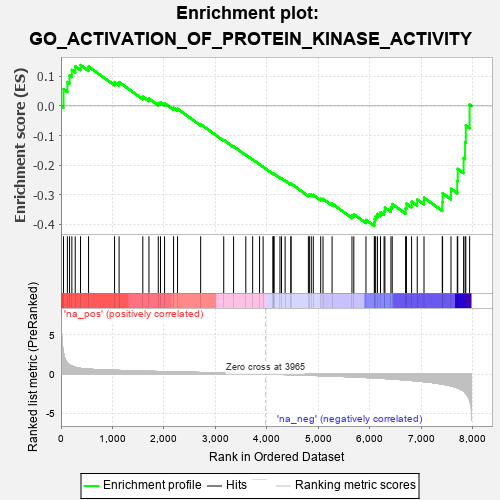
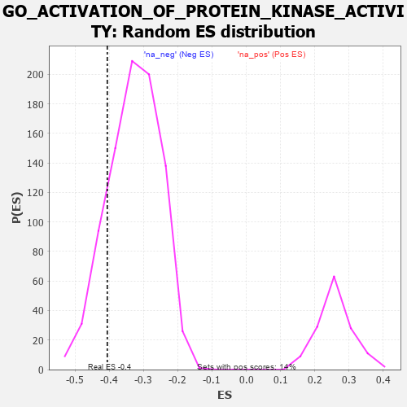

| | | Dataset | 7d |
| Phenotype | NoPhenotypeAvailable |
| Upregulated in class | na_neg |
| GeneSet | GO_ACTIVATION_OF_PROTEIN_KINASE_ACTIVITY |
| Enrichment Score (ES) | -0.4058551 |
| Normalized Enrichment Score (NES) | -1.2392292 |
| Nominal p-value | 0.15617716 |
| FDR q-value | 0.5602284 |
| FWER p-Value | 1.0 |
Table: GSEA Results Summary

Fig 1: Enrichment plot: GO_ACTIVATION_OF_PROTEIN_KINASE_ACTIVITY
Profile of the Running ES Score & Positions of GeneSet Members on the Rank Ordered List
| PROBE | GENE SYMBOL | GENE_TITLE | RANK IN GENE LIST | RANK METRIC SCORE | RUNNING ES | CORE ENRICHMENT | | 1 | TGFB3 | | | 49 | 2.654 | 0.0565 | No |
| 2 | ADCY8 | | | 124 | 1.418 | 0.0807 | No |
| 3 | AXIN1 | | | 166 | 1.159 | 0.1029 | No |
| 4 | SPDYA | | | 211 | 1.026 | 0.1216 | No |
| 5 | HGF | | | 276 | 0.870 | 0.1341 | No |
| 6 | CLSPN | | | 379 | 0.719 | 0.1382 | No |
| 7 | PKN1 | | | 535 | 0.619 | 0.1332 | No |
| 8 | AKT1 | | | 1040 | 0.476 | 0.0807 | No |
| 9 | SRC | | | 1128 | 0.459 | 0.0806 | No |
| 10 | ERP29 | | | 1589 | 0.376 | 0.0313 | No |
| 11 | TPX2 | | | 1708 | 0.355 | 0.0247 | No |
| 12 | PAK3 | | | 1889 | 0.322 | 0.0096 | No |
| 13 | HACD3 | | | 1932 | 0.315 | 0.0117 | No |
| 14 | RAF1 | | | 2011 | 0.303 | 0.0090 | No |
| 15 | SYK | | | 2186 | 0.278 | -0.0064 | No |
| 16 | SHC2 | | | 2263 | 0.266 | -0.0097 | No |
| 17 | PHB2 | | | 2712 | 0.197 | -0.0617 | No |
| 18 | ERN2 | | | 3160 | 0.129 | -0.1152 | No |
| 19 | TAB1 | | | 3351 | 0.097 | -0.1370 | No |
| 20 | MAPK3 | | | 3589 | 0.062 | -0.1655 | No |
| 21 | DAXX | | | 3722 | 0.038 | -0.1813 | No |
| 22 | DGKQ | | | 3856 | 0.020 | -0.1976 | No |
| 23 | NRG3 | | | 3925 | 0.005 | -0.2061 | No |
| 24 | MTOR | | | 4114 | -0.025 | -0.2293 | No |
| 25 | ABL1 | | | 4125 | -0.027 | -0.2299 | No |
| 26 | PLCE1 | | | 4127 | -0.028 | -0.2294 | No |
| 27 | CRK | | | 4139 | -0.031 | -0.2300 | No |
| 28 | RPTOR | | | 4252 | -0.050 | -0.2430 | No |
| 29 | WNT11 | | | 4282 | -0.056 | -0.2454 | No |
| 30 | ADRB2 | | | 4352 | -0.068 | -0.2525 | No |
| 31 | ERCC6 | | | 4464 | -0.087 | -0.2644 | No |
| 32 | LRRK2 | | | 4467 | -0.087 | -0.2626 | No |
| 33 | TNIK | | | 4804 | -0.158 | -0.3014 | No |
| 34 | TAOK3 | | | 4823 | -0.162 | -0.2998 | No |
| 35 | DLG1 | | | 4860 | -0.169 | -0.3004 | No |
| 36 | MARK2 | | | 4899 | -0.177 | -0.3010 | No |
| 37 | PDPK1 | | | 5043 | -0.207 | -0.3142 | No |
| 38 | DRD2 | | | 5088 | -0.221 | -0.3145 | No |
| 39 | CDK1 | | | 5264 | -0.262 | -0.3304 | No |
| 40 | WNK1 | | | 5650 | -0.362 | -0.3706 | No |
| 41 | MADD | | | 5686 | -0.371 | -0.3662 | No |
| 42 | STK11 | | | 5922 | -0.443 | -0.3855 | No |
| 43 | DBNL | | | 6084 | -0.501 | -0.3940 | Yes |
| 44 | UBB | | | 6090 | -0.503 | -0.3828 | Yes |
| 45 | ATG13 | | | 6110 | -0.508 | -0.3732 | Yes |
| 46 | STK4 | | | 6145 | -0.518 | -0.3652 | Yes |
| 47 | INSR | | | 6204 | -0.538 | -0.3598 | Yes |
| 48 | STK39 | | | 6274 | -0.563 | -0.3552 | Yes |
| 49 | TRAF7 | | | 6290 | -0.571 | -0.3436 | Yes |
| 50 | UBE2N | | | 6407 | -0.621 | -0.3436 | Yes |
| 51 | MALT1 | | | 6432 | -0.634 | -0.3317 | Yes |
| 52 | PAK1 | | | 6691 | -0.757 | -0.3464 | Yes |
| 53 | EGFR | | | 6708 | -0.765 | -0.3304 | Yes |
| 54 | ADAM9 | | | 6808 | -0.819 | -0.3235 | Yes |
| 55 | CSPG4 | | | 6918 | -0.878 | -0.3166 | Yes |
| 56 | PIBF1 | | | 7049 | -0.966 | -0.3102 | Yes |
| 57 | GRM1 | | | 7404 | -1.272 | -0.3249 | Yes |
| 58 | UBC | | | 7410 | -1.274 | -0.2954 | Yes |
| 59 | TRAF4 | | | 7573 | -1.514 | -0.2801 | Yes |
| 60 | ADCY1 | | | 7695 | -1.752 | -0.2540 | Yes |
| 61 | ADCY9 | | | 7704 | -1.783 | -0.2128 | Yes |
| 62 | TRAF6 | | | 7818 | -2.157 | -0.1761 | Yes |
| 63 | GRM4 | | | 7847 | -2.393 | -0.1231 | Yes |
| 64 | TRAF2 | | | 7861 | -2.481 | -0.0661 | Yes |
| 65 | ARRB1 | | | 7935 | -3.377 | 0.0046 | Yes |
Table: GSEA details [plain text format]

Fig 2: GO_ACTIVATION_OF_PROTEIN_KINASE_ACTIVITY: Random ES distribution
Gene set null distribution of ES for GO_ACTIVATION_OF_PROTEIN_KINASE_ACTIVITY